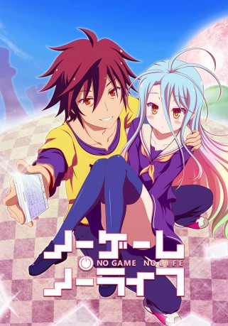

")
 
 IMDB-Wertung: 8.1 / 10
IMDB-Wertung: 8.1 / 10  Metascore:
Metascore: 
Das Internet ist voll von Gerüchten über die NEETs, Hikikomoris, Genies und gleichzeitig über die Geschwister Sora und Shiro. Die echte Welt bezeichnet sie als "scheiß Spiel". Doch eines Tages meldet sich eine Person bei ihnen, die sich "Gott" nennt und beschwört die beiden in eine Parallelwelt. Dort hat "Gott" den Krieg verboten und entschied, dass alles durch Spiele entschieden wird, sogar nationale Grenzen. Die menschliche Zivilisation umfasst nur noch eine einzige Stadt und wird von allen Seiten durch andere Arten bedrängt. Können Sora und Shiro, die sozialen Einsiedler, das Überleben der Menschen in dieser Parallelwelt sicherstellen?
Jahr: 2014
Dauer: 23 Minuten
FSK:
Land: Japan Studio: Frontier WorksTonspuren: DTS - ,
Untertitel: Deutsch,
Auflösung: 720p (1280x720) Größe: 617 MB
Genre: Komödie, Abenteuer, Fantasy, Animation/Trick, TV-Serie
Regisseur: Atsuko Ishizuka
Drehbuch: Ivan Della Mea
Soundtrack:
Darsteller:
Datei: X:\HD-Anime-Serien\No Game No Life\No Game No Life E01 Anfänger.mkv seit 18.02.2017
Festplatte: Gemischt-01+Anime
 Es gibt insgesamt 67 Filme in der Gruppe 'HD-Anime-Serien'
Es gibt insgesamt 67 Filme in der Gruppe 'HD-Anime-Serien'